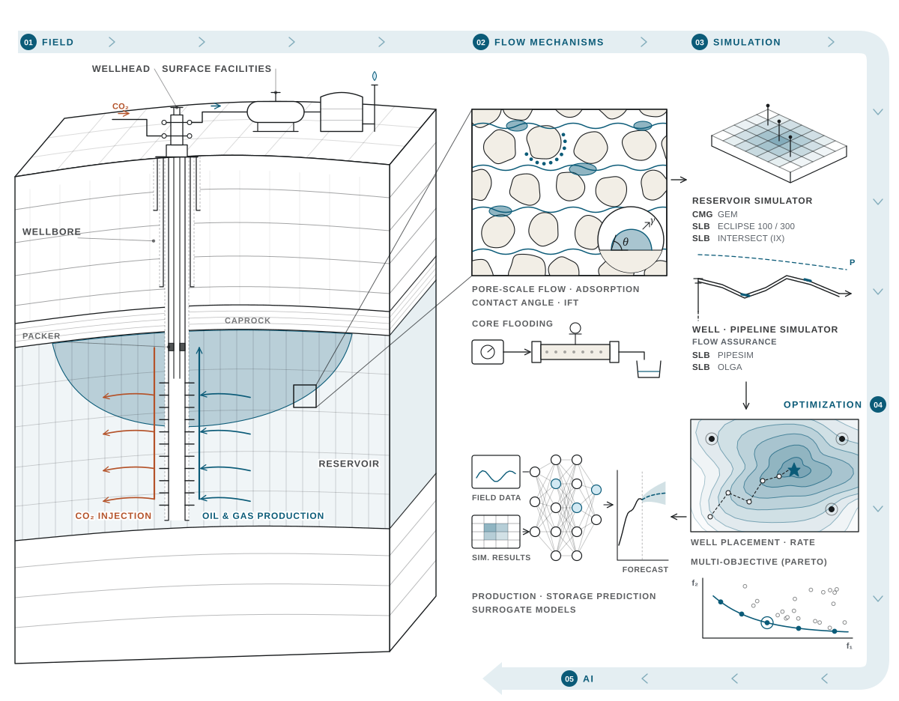

연구실 소개About Our Laboratory
지도교수Principal Investigator
이영수 Youngsoo LeeYoungsoo Lee
지도교수 · 전북대학교 기후환경에너지융합학과Director · Dept. of Climate, Environment & Energy Convergence, JBNU
location_on 공과대학 2호관 307호Rm 307, Engineering Bldg. 2 · call 063-270-2392 · youngsoo.lee@jbnu.ac.kr
학력 및 경력Education & Career
- 2013 – 현재Present전북대학교 기후환경에너지융합학과 교수Professor, Jeonbuk National University
- 2011 – 2013한국가스공사 연구개발원 선임연구원Senior Researcher, KOGAS R&D Division
- 2009 – 2011한양대학교 지구환경시스템공학 연구조교수Research Assistant Professor, Hanyang University
- 2005 – 2009한양대학교 지구환경시스템공학 박사Ph.D. in Geoenvironmental System Engineering, Hanyang University
전북대학교 기후환경에너지융합학과 지하유체유동연구실(GeoFlow Engineering Lab)은 2013년 설립 이후 지하 유체 유동에 대한 깊은 이해를 바탕으로, 전통 자원개발과 탄소중립 기술을 아우르는 연구를 수행하고 있습니다.Since 2013, the GeoFlow Engineering Lab in the Department of Climate, Environment & Energy Convergence at Jeonbuk National University has pursued research spanning conventional resource development and carbon-neutral technologies, grounded in a deep understanding of subsurface fluid flow.
연구실 로고Our mark
지층 레이어와 아래로 향하는 화살표는 지하에서의 유체 유동을 나타냅니다.The strata layers and the downward arrow represent fluid flow in the subsurface.
코어 스케일에서 필드 스케일까지From core scale to field scale

담당 교과목Courses
학부 과정Undergraduate Program
| 교과목Course | 학년-학기Year–Sem. |
|---|
대학원 과정Graduate Program
| 교과목Course | 개설 학기Semester |
|---|
진출 분야Career Paths
본 연구 분야를 통해 관련 기관·기업으로 진출할 수 있으며, 그중 일부와는 지속적인 연구 협력을 이어오고 있습니다.This field leads to careers at related institutions and companies, and we maintain ongoing research collaborations with several of them.
연구 협력 기관Research partner
공기업 · 정부출연연구원Public Corporations & Government Institutes
국내외 산업체Domestic & Global Industry
국제 협력기관International Partners